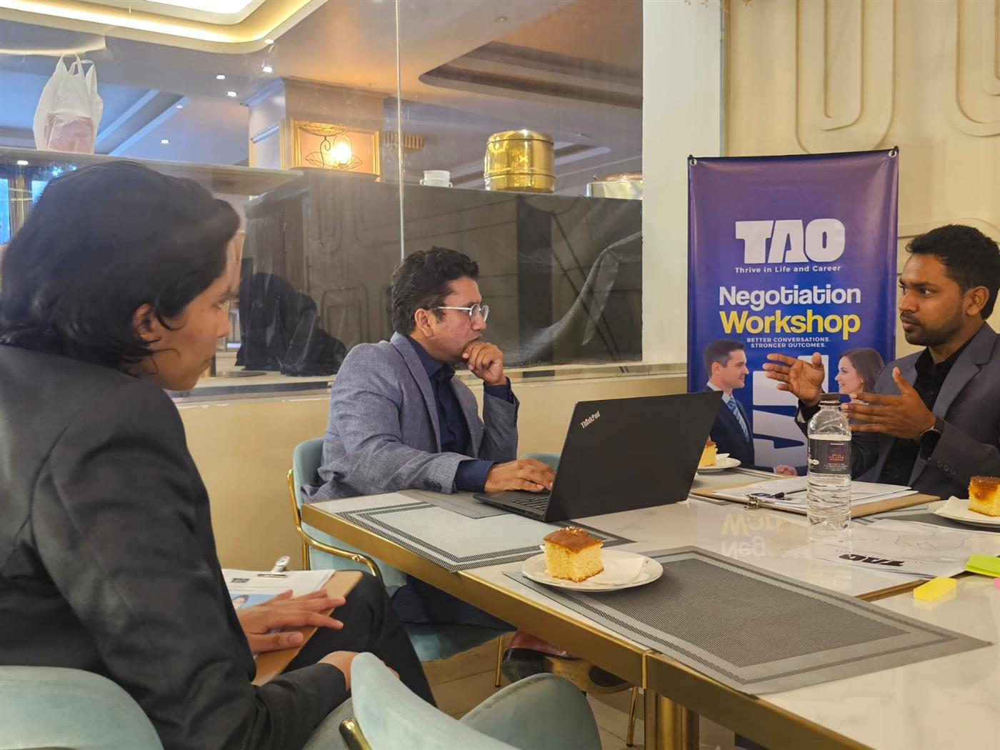

For Organisations
Development designed around your people and your context.
TAO works with organisations to build communication, leadership and negotiation capability — through programmes built on your own situations and led by practitioners.

Who we work with
For organisations that depend on how people work together.
Every organisation eventually meets the same limits: decisions that stall, conversations that are avoided, negotiations that leave value on the table. TAO works on those limits directly.
- Companies
- Leadership teams
- Professional organisations and associations
- Educational institutions and universities
- NGOs and development organisations
- Project and functional teams
- Emerging-leader and graduate cohorts
What we offer
Programmes and facilitation.
Custom workshops
A workshop designed around one specific challenge your team is working through.
Leadership development
Programmes for emerging and established leaders, built on the situations they actually face.
Communication training
Presentation, professional communication and English for work, grounded in your own material.
Negotiation programmes
A shared preparation method and realistic practice for teams who negotiate with clients, suppliers or partners.
Team development
Facilitated work with an intact team on how it communicates, decides and handles disagreement.
Facilitated conversations
Independent facilitation for retreats, strategy sessions and difficult conversations between groups.
How an engagement works
From first conversation to follow-through.
Organisational programmes follow the TAO Method at a larger scale: understand first, then design, then deliver, then make it stick.
Conversation
We listen to what your team is working through and what a good outcome would look like.
Assessment
We clarify the context, the people involved and the behaviours that need to change.
Design
We propose a programme — format, duration and content — built on your own cases.
Delivery
Facilitated, experiential sessions: frameworks, practice, feedback and reflection.
Application
Commitments, follow-up and a short summary of themes for your leadership.
Formats
Shaped to how your organisation works.
- Half-day and full-day workshops
- Multi-session programmes
- Leadership off-sites and retreats
- Online and hybrid sessions
- Facilitated team conversations
Programmes can be adapted for multilingual and international teams.
Begin
Tell us what your team is working through.
A short, no-obligation conversation is the first step. We will tell you honestly whether and how TAO can help.